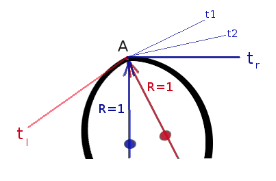

First about ambiguities in presupposed definitions in the lemma 6.
0. First at all, in following definitions of a tangent, one should add clause
"in some neighborhood of point A". Otherwise many of "legal curves" won't
have tanngents. For example the spiral, y=sin(x) except x=PI*n.
1. Curvature. Definition 1.
In modern science, the curvature is a second derivative d(angle)/d(length). In plain words,
it is how quickly angle of tangent changes when point moves along the curve. A speed.
For example, when radius of the cirle is small, then tangent rotates faster and curvature is
bigger.
However, the Lemma 6 discusses definition of tangent and its properties. So, above
definition of the curvature is useless and introduces a logical loop, because it
does already uses definition and existance of the tangent.
That's, in plain words, is a chicken and egg problem.
2. Curvature. Definition 2.
It may mean, that Newton uses different wording in definition of the curvature, a limit of
"three-points" circle ABG with point B in neightbourhood of
the point A, and point G which is a crossing of perpendiculars to tangent t and AB.
That's again poses "chicken and egg" problem because already assumes exstance of the tangent and possibly its properties which one just begins to introduce in Lemma 6.
3. "Curvature". "Definition 3".
It means that curve in point A has no "corners" like for these joined circles:

In more precise words,
"left" and "right" tangents are coinside. Tangent tl of point X which
moves from the left to point "A" will lie on the same straight line that tangent
tr of point Y which moves from the right to point "A".
But this poses even more problems. One have to introduce left and right tangent. But these
tangents are really non Euclidean because in Euclidean definition of the tangent, tangent is
the line ( or ray of line in our case ) which has only one common point with the curve.
But in this Euclidean way of thing, there are infinitely many rays t1, t2,
on the right side of point A which touch the curve in point A
In case is we adopt notion of right and left tangent, there is no suitable Euclid
definition and we may have to use Newtons defition of the tangent given as a
"limit of chords anchored at point A".
But from immediate Newton definition it does not follow that "tangent" has only
one point with the curve. Instead, this has to be proven.
Moreover, N. himeselve already assumes that tangent exist. Logical loop.
4. So, therefore insteand of presupposing inaccurate notion of curvature, we have to reconstruct precondition and context of the lemma 6 in other way.
One of the suitable and logically accurate ways is to give the following definition
of "Euclidean" tangnet in point A.
"Tangent definition E":
The tangent is a srtaight line t which has only one point with the curve and
through point A there is no other straight line between curve and t.
Existance of such line is proven in Euclid geometry for cicrles and possibly proven or can be easily proven for conics. And this "desperately" restricts Euclid theory from using in
Physics and in Principia. "Real" curves do not have to be conics.
In lemma 6 N. states this in form that "no other line" lies between curve and tangent.
So, in our "approach 4" as a precondition of the lemma we assume that we studying only
tangents which satisfying def. E.
(This is actually still a dead end way because misses the lines like y=x^3
at point (x,y) = (0,0). But let us first to figure out our simple case.)
Now, let's follow Newton's proof. Note first that Newton still considers only proof on
"one-side" of the point A.
4.a. The proof is "ad absurdum". Newton deliberately supposes the wrong case.
4.b. The proof uses "Newtons microscope":
proportional images of chords and curve and relyes on that in this picture
chords will be monotonically rotate counter clockwise and
and points b' monotonically go "up", toward the pont d.
4.b.I. Assume there is a point L which is above all points b',
and L is below point d.
4.b.II. Let's take the line AL' where L' is between L and d.
4.b.III. This line is between curve and line Ad. We reached the desired contradiction.
Lemma 6 is proven.
5. Approach of "Tangent definition E" does not allow to build theory tangents of curves.
Because it in first requires to prove existance of the tangent for the curve.
In contrast, the value of lemma 6 is that lemma 6 can "discard"
"Tangent definition E" and
gives own, "non Euclidean" but "Newtonian"
defintion of the tangent as a limit of chords on one side of the curve.
But, it may require more axioms added to Euclidean Geometry. For example, Newtonw's construct
does not really depends on is Ad a tangent or not.
The only condition is that right branch of the curve lies on one
side of this line. When we build points b', they will be on one side of
point d, so all b' are bounded above.
Then we add Dedekinds axiom of Geometry = "that there is a point L which is sup of {b'}".
That's all. Line AL is a tangent by this "pure Newton definition".
We still need to proof though that this tangent will satisfy "definition E".
Now it is easy. Suppose, there is another straight line in point of tangent and it crosses
line dr at point L' below the L. Because of L is an sup, there is a point b' between L' and L, and part of curve lies between AL' and AL and therefore we reach desired contradiction.
Moreover, the Newtons definition solves tangents for y=x^3, moreover it does nont need any
precondition of monotonity of b'. Moreover, it helps? to build theory of curves in pure
numebrical way bypassing Geometry at all.